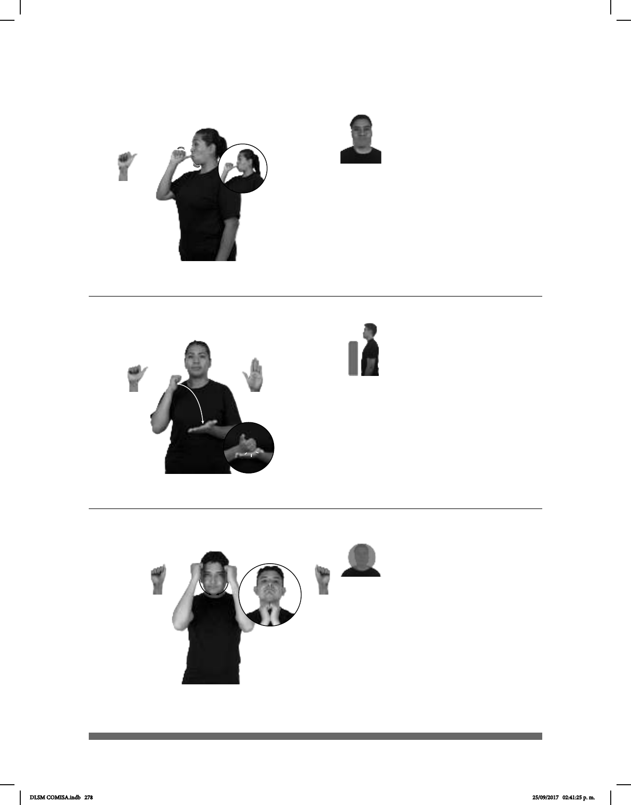

278
(A-137) Marca
Seña: SM
A.4
Palma hacia la izquierda.
A la altura de la boca.
Mejillas
Simula la acción de
tomar un líquido de una mamila.
1. sust. f. Recipiente que se
utiliza para alimentar a los bebés que
consta de una botella y un chupón en
su parte superior; biberón. 2. sust. m.
Pieza, generalmente de goma,
semejante al pezón materno que se da
a un lactante para que beba de la botella
o para entretenerlo o calmarlo.
Seña: SB
MD A.1, MB
B-P.2
MD palma hacia la
izquierda con dedo pulgar hacia
arriba, MB palma hacia arriba.
MD del cuello a MB.
MB a la altura del pecho.
La MD golpea a la
MB en línea recta.
sust. f. Signo externo
la autenticidad de un producto.
(A-136)
1
2
CHUPÓN DEBE DAR #BEBÉ
Dale el chupón al bebé.
EXCELENTE MARCA
Esa marca es excelente.
Seña: SS
A.5
Palmas hacia el centro.
De las sienes a la barbilla.
Las manos se mueven
formando un arco hacia abajo.
Simula la acción de poner-
se una máscara.
sust. f. Cubierta que se pone en
la cara para ocultarla o para
representar a un personaje mítico o teatral,
generalmente pintada con los rasgos y las
(A-138)
LUCHADOR
área
USAR MÁSCARA
Los luchadores usan máscara.
DLSM COMISA.indb 278 25/09/2017 02:41:25 p. m.